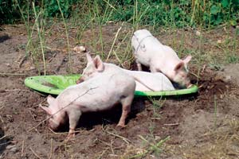

Dear Mother: October/November 2007
Letters from our readers on everything from vanishing bees to the winged beans.
Reader Letters
October/November 2007
You all have certainly sent in a bountiful batch of letters and e-mails recently - notably about Electric Bikes, Vanishing Bees, Winged Beans, Better Mileage, the Bible of Homesteading, Big Brother and Better Living. Contributing editor and herbal expert Dr. James Duke wrote to tell us about winged beans vs. cancer. Don Rylander provided a great tip on a super-easy solar water treatment. Beekeeper Nevin Hawlman sent a disturbing report on the status of bees and pollinating insects in Pennsylvania.
If your letter was not selected for publication, it’s probably because we are now receiving far more letters than we have space to publish. It’s a problem we are happy to have, and we plan to resolve it by adding a new section to our Web site so the Mother Earth community conversation can expand. Watch for more details soon, and meanwhile, keep those cards and letters coming!
Where Have all the Bees Gone?
I am writing with regard to the mysterious honeybee Colony Collapse Disorder that is affecting bees all around the world. I have been a beekeeper for many years, and my grandfather was a beekeeper before me. I make houses for bees that I sell on the Internet, and have many models scattered around my Pennsylvania property. This year they are all but empty.
Last week I picked up a wheelbarrow full of dropped apples, and saw only two yellow jackets, no other bees or wasps. In previous years there would’ve been dozens of bees, wasps and hornets on the apples.
The one plant in central Pennsylvania which attracts the most insects of all species is the wild clematis, now in full bloom. It is nearly void of insect life and much more fragrant than I remember; an indication that the nectar is not being consumed. This information worries me; I’m talking about no pollinators!!
I have not seen one honeybee for months; not on my apple blossoms, or even on the sweet clover they love. Nor have I seen one bald-faced hornet; they are usually plentiful in my area. Last year I raised over 100 monarch butterflies. This year I spent about an hour afield and could not find even one caterpillar.
I hope this information is helpful as you report on Colony Collapse Disorder, which I call “Insect Alzheimer’s.”
Nevin Hawlman
Sunbury, Pennsylvania
We encourage readers to post reports about the state of bee populations in their gardens on our Honeybee Decline page. -Mother
Better Living with Bikes
These days life can seem crazy at times. Regardless of whether or not global warming is taking place, we are polluting and expanding our concrete society over the face of the Earth. The United States has enough nukes to obliterate the planet four times over, and world hunger is at an all-time high.
Here in Fort Collins, life is going as usual. We’re paying for our fast food and then paying for our gym memberships to work off the fat. We’re sending our young men and women to the Middle East to fight terrorism, then hopping into our SUVs and buying fuel that supports this violence. We’re working every day, all day, all to pay for our monthly brain-killing cell phones, our cable TV, our iPods, our $200 jeans and worst of all ... our cars: our beloved toys.
Now don’t get me wrong, I realize the benefits of cars, but it wasn’t until recently that I realized how depressing our attachment to them is. With all the problems going on in the world, there is one difference you can make, a difference that promotes exercise and independence, saves money, fights terrorism, saves the environment, and promotes a slower, simpler and ultimately healthier way of life, for both us humans and our environment. It’s nothing new, in fact it’s been around longer than the automobile. If you haven’t guessed already, it’s the bicycle.
I sold my car six months ago, leaving my bicycle as my sole means of transportation. I’ve never felt better. Not only do I feel like I’m making a difference for both myself and my community, but I’ve also been able to significantly slow my life down; taking in the scenery, sights, smells and sounds everywhere I ride. I just thought I’d let you all know that while you argue about environmentally safe cars, pay $4 a gallon for gas, and shell out hundreds on insurance, I pay nothing, get infinite miles per zero gallons, and make no environmental impact.
Ben Timby
Fort Collins, Colorado
Loves His E-Bike
One bike I did not see in "Ride Green with Electric Bikes and Scooters" (April/May 2007) was the Liberty Electric Bikes 643 Town & Country Cruiser. I ordered one last April to use for all of my commuting needs. This bike continues to out-perform everything listed in your article, with the exception of the Vectrix.
I weigh 220 pounds and this bike will pull me up some pretty steep hills at 13 mph without pedaling and at 16 to 17 mph with pedaling. I have already done 30 miles on one continuous ride with no loss of power; the charge meter had just begun to drop from full at the end of the ride. Top speed of this bike on level ground (with the speed limiter unplugged) is 24 mph without pedaling, and 27 to 28 mph with pedaling.
I am 48 years old and originally decided on an electric bike due to health reasons. I have been pleasantly surprised by the exercise I am getting since I find myself pedaling everywhere. My fuel costs will average about 25 cents a week and the benefits to the environment are fantastic.
This bike cost me less money than it would have to re-register, insure and pay taxes on my car. On top of this, it will save me $120 to $150 a month in fuel costs and my health is improving. One of the deciding factors in choosing this bike was that I found an advertisement for Liberty Electric Bikes in your excellent magazine and on your Web site. I strongly recommend any of your readers interested in an electric bike to take a look at their Web site.
Rick Parrish
Woodruff, South Carolina
Kudos to Cavagnaro
I so appreciated getting to know David Cavagnaro, the man behind so many of your photos, in A Tale of Two Homesteads (August/September 2007). I have been enjoying his photographs in gardening magazines for many years.
Thanks again for your comprehensive articles. I have been reading Mother Earth News since I was living in a one-bedroom apartment in Los Angeles.
Celia De Frank
Big Bear Lake, California
Don’t Drink Your Soft Water
I found the article on salt consumption in the June/July 2007 issue very accurate and educational. I feel that you left out one important piece of information, though. I did my master’s thesis in groundwater geology at Wayne State University in Detroit and found that a household water softener can add up to 1,000 pounds of sodium chloride annually per household. Water softeners replace calcium and magnesium ions (otherwise known as “hardness”) with sodium chloride ions. Road salt is another major contributor of sodium chloride into the ecosystem/water supply. Households whose wells were near paved roads and also used a water softener had a noticeably higher sodium chloride level in their water. The process of softening the water will increase the already high levels of sodium chloride. This is not only a health issue for humans but also for the Great Lakes, whose levels of chlorides have been rising steadily since the 1900s.
Kathleen Aseltyne
White Lake, Michigan
Porkers at Play
Both my hubby and I had to laugh when we saw the letter and picture from the lady who found another use for the winter sled - rinsing her veggies - as we use ours for a pig tub. As you can see, they love it and spend most of the hot summer days fighting over who gets to be next.
Bruce and Debra West
Northport, Michigan
The American Bible of Country Living
Thank you for a superior magazine. In my opinion, your publication is worth more dollar for dollar than any other magazine in print. It should be the American country living “bible.” Thanks again!!!
Bill McComas Jr.
Radnor, West Virginia
War is Everybody’s Business
The letter from the Michigan gentleman who wrote that the Iraq War was none of Mother’s business forgets that a war about who gets to use the oil is very much the business of an environmental magazine.
Too many people in our country use the term “political” to mean “anything I don’t want to talk or think or do something about.” Too few want to recognize that all wars are based on unsolved political questions, from oil wars to the fast-approaching water wars.
The sectarian violence of desert countries is based in centuries of water fights. The connections between oil, water, farming - in fact the entire environment - make this war everyone’s business.
Donna Barr
Clallam Bay, Washington
DIY Swimmin’ Pool
I just wanted to share these pictures with you of our “homemade” pool/pond because it was your ’zine that was our inspiration. We’re finally doing it, now that we’re semi-responsible, semi-retired peeps. None of it’s done yet, but it sure is fun doing it!
Jon and Joan Pietras
Lenoir, North Carolina
You can find several DIY pool articles here. -Mother
Easy Solar Water Treatment
My life is somewhat similar to that of Susan Lahey in Firsthand Reports (June/July 2007), except that I don’t even use wood heat. Here in Texas I find that long johns and a coat suffice.
I use rainwater and creek water only. I solar heat the bathwater in black, 1 gallon, plastic, antifreeze containers which I place in plastic foam coolers, covered with glass instead of the lid. Air conditioning? Get serious! Instead, dampen one’s clothes with a spray bottle. It’s called evaporative cooling.
The real reason I write this letter: I, too, for a long time hauled drinking water from town. No longer: Simply place rainwater in clear plastic bottles and lay them out in a row in the sun. The UV light zaps any little bird doo-doo pathogens that may have come down from the roof. Three sunny days will do the job but I leave mine out for about a week.
Don Rylander
Bastrop, Texas
For more about this solar water disinfection method, click here. -Mother
Psophocarpus Tetragonolobus
Winged Beans vs. Cancer
Your winged bean article was very timely, as I am studying it as the best source of betulinic acid, an anti-cancer compound. The stems and young shoots are much better sources of this compound than the seeds.
James A. Duke, Ph.D.
Fulton, Maryland
Winged Bean Growing Advice
I have grown and enjoyed winged beans for over 10 years, so I was glad to see your article by William Woys Weaver about the ‘Hunan’ variety in the June/July 2007 issue. In my experience nearly everyone likes the delicious pods and mushroom-flavored flower buds (stir-fried). I like the tender young shoot tips as a garden nibble.
Jeff Weyers
Pomaria, South Carolina
Read Dr. Duke’s full letter and Jeff Weyers’ detailed growing advice, plus the original article, Introducing the Hunan Winged Bean. -Mother
Forest Gardening … in 1491
First, let me say your magazine is excellent - every issue ends up with the majority of the articles tagged for future reference - so much to learn! Second, the article on Forest Gardening in the August/September 2007 issue was very informative, and something I plan to do. Interestingly, I had just read about this way of managing and producing food in a book called 1491, by Charles C. Mann, but he was describing how the first peoples living throughout the Amazon region practiced “forest gardening” - thousands of years ago!! He also explained how they made extremely fertile soil, which it still is to this day! (The rest of the book will knock your socks off.) And third, I just wanted to say thank you to Mr. Ussery and all of Mother’s other contributors for sharing their knowledge and expertise.
Kristina Lefever
Marietta, Georgia
Mad About Mother
Accept this payment for my two-year subscription. What more can I say? Is there any other magazine more important and relevant in this time - with global warming upon us and the threat of extinction of so many species, not to mention ourselves. You at least offer a glimmer of hope, a thought for survival, and you help us learn how to manage our world in the right direction. Thank you.
P.S. Please publish more about urban homesteading, as so many of us still working (not retired) are trying desperately to manage a healthier existence for ourselves and our environment in small urban homes.
Claire Liston
Phoenix, Arizona
Uncle Sam Plays Big Brother
Thank you for the article on the National Animal Identification System (NAIS) in the June/July 2007 issue. I hope you continue to cover this important issue, as it affects all of your readers.
I live in Wisconsin and am currently considered a criminal in that I will not register my premises with NAIS (I have 32 free-ranging chickens). NAIS is not voluntary here as “intended.” Penalties were to be imposed on those not in compliance. The county fair committees have been instructed to keep track of the kids whose premises are registered, and whose are not.
This is a very serious issue, and it’s shocking to me that it ever even happened in America, made mandatory by Wisconsin legislators and the governor. May the traditional, natural and organic ways of farming be allowed to continue.
Gerard Schubert
Berlin, Wisconsin
DIY Rainwater Harvesting System
This is in regard to your article, Wise Watering, June/July 2007. Our house has slow well recovery and it is not sufficient for the garden. I made a water tank of old deck 2-by-8 lumber and lined it with a leftover piece of rubber roofing material. This tank is near the garden and is fed rainwater from the back half of the roof through a heavy-duty plastic well pipe attached to the end of the gutter. It holds about 250 gallons of water. This year I added a second one. It is quite amazing how much water collects in just a short passing thunderstorm.
Fred Weik
Wolcott, Connecticut
For more about this topic, Rainwater Harvesting for Drylands, by Brad Lancaster, is available here. -Mother
Naturally Talented
We’re pleased to report that longtime contributor Terry Krautwurst won two awards in the annual competition of the Outdoor Writers Association of America. Both awards are for articles from his Mother’s Nature department. Dazzling Dragonflies (August/September 2006) took home first place for magazines in the natural history contest, and Brain Birds: Amazing Crows and Ravens (December 2006/January 2007) won third place. Terry’s writing enriches each issue of Mother Earth News; the awards are well-deserved. -Mother
Calling All Carvers
Kids of all ages, sharpen your knives! Enter the Mother Earth News Pumpkin Carving Competition and post photos of your finest work here. We’ll be awarding prizes and publishing photos in three categories: Goofiest Faces, Scariest Faces and Cleverest Use of a jack-o’-lantern - anything goes in this category!
|
ISTOCKPHOTO/RYAN PIKE Worker bee |
JON AND JOAN PIETRAS Jon and Joan Pietras' natural swimming pool. |
ROB CARDILLO Winged bean |
|
 BRUCA AND DEBRA WEST Bruce and Debra West's pigs use their winter sled as a pig tub. |
 ISTOCKPHOTO Let your imagination guide you and enter the Mother Earth News Pumpkin Carving Competition! |
|